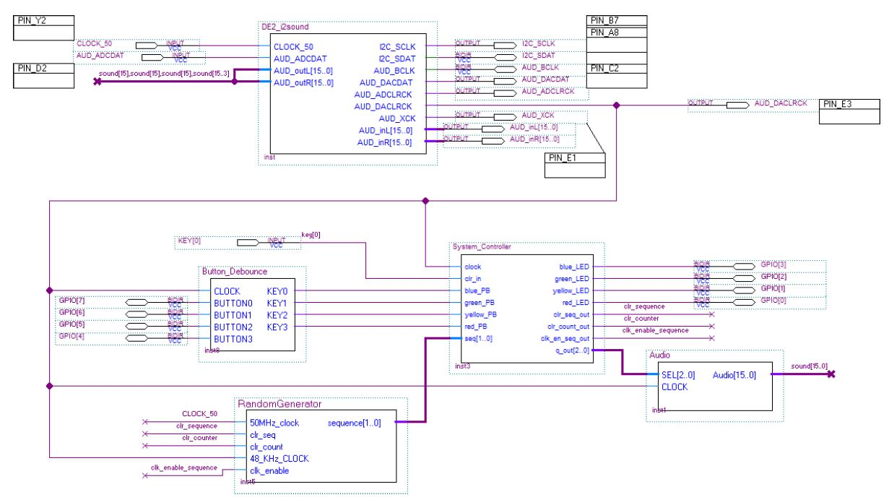
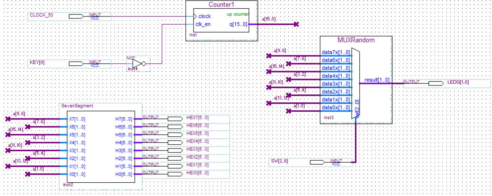
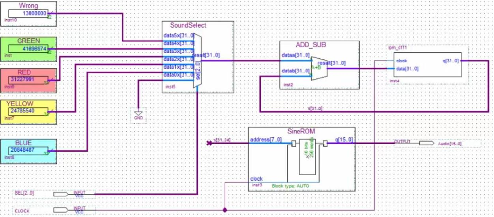

The Simon Says project was implemented on the DE2 Development FPGA board over several weeks. This project gave me a lot of experience with Quartus and VHDL, and taught me the importance of hierarchical design, especially in digital systems designed by a team
The top level schematic for the DE2 board was provided to us, however it was up to me and my group mates to build the rest of the component blocks and underlying digital logic. The scale of the task necessitated that it be approached in a systematic and hierarchical manner. Below are some screenshot of the circuits that were developed in Quartus Prime, including the top level schematic as well as the logic design for some of the block components.
Final Top Level Schematic
Psuedo Random Number Generator
Audio Synthesizer